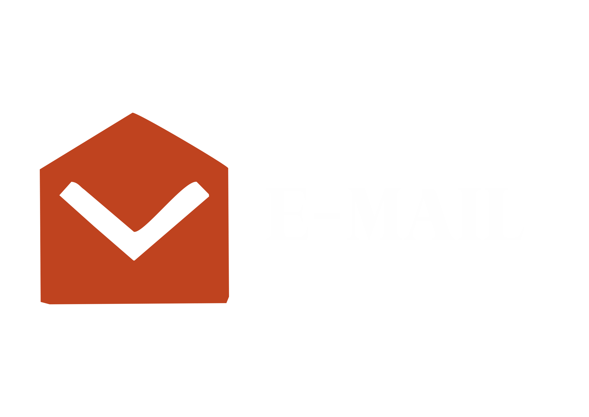

Rumah Batik JIGI
Rumah Batik JIGI adalah sebuah merek yang telah mengukir namanya di dalam kategori Fashion Nasional, dengan akar budaya yang dalam di Daerah Jawa Barat, tepatnya di Tasikmalaya. Brand ini dikenal sebagai destinasi utama bagi pecinta mode, menawarkan beragam pilihan pakaian untuk pria, wanita, dan anak-anak, serta koleksi aksesori yang terbuat dari kain batik khas Tasikmalaya. Keunikan desain pada kain batik yang dihasilkan tidak hanya memperlihatkan keindahan, tetapi juga mampu mencerminkan ciri khas dan keistimewaan kota Tasikmalaya itu sendiri.
Rumah Batik JIGI tidak hanya menjual produk, tetapi juga mewujudkan nilai-nilai yang sangat dihargai oleh konsumennya. Merek ini dikenal sebagai simbol kejujuran dan kesederhanaan dalam pasar mode. Ketulusan dalam berbisnis dan komitmen terhadap kualitas mengukuhkan posisi Rumah Batik JIGI sebagai pilihan yang terpercaya bagi para pelanggan yang mengutamakan integritas dan gaya yang tak berlebihan. Dengan menggabungkan kekayaan warisan budaya Tasikmalaya dan nilai-nilai modern, Rumah Batik JIGI menjadi lebih dari sekadar merek pakaian, namun juga cerminan dari semangat daerah dan kesederhanaan yang elegan.
Gallery


C O N T A C T
U S
Jalan Cigeureung nomor 78, Tasikmalaya
Jawa Barat - Indonesia
Senin - Jumat : 09:00 - 19:00
Sabtu - Minggu : 10:00 - 19:00
+62-822-1874-4441 (Irni Susanti)
+62-818-0914-9145 (Irwan Sofwan)

jigitasikmalaya@gmail.com